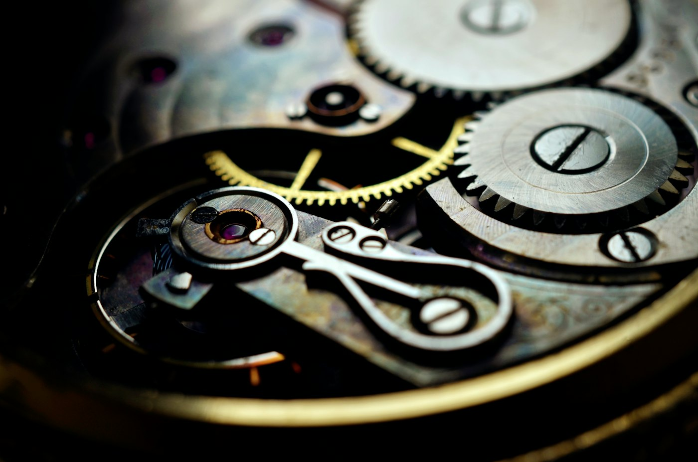
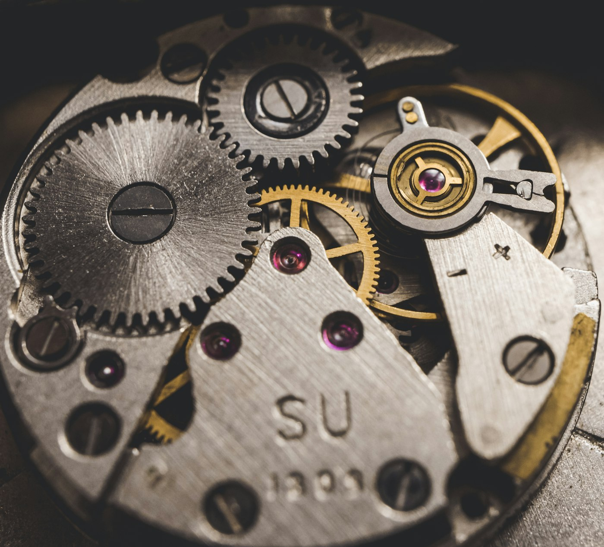

Allocation Nº 03 · 50 pieces
Two hundred hours of hand-finishing in every calibre. Open the caseback in 3D and watch the balance wheel beat at 21,600 vibrations an hour.

Every bridge is bevelled and polished by one watchmaker. Rotate the calibre, zoom to the jewels, and follow the energy from mainspring to escapement.